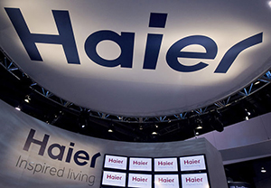
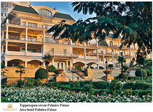
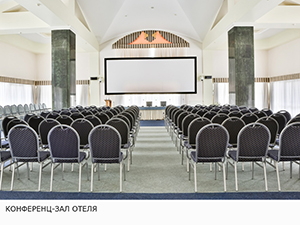
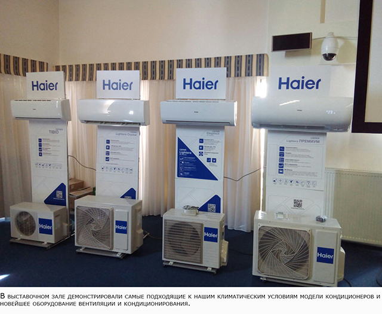
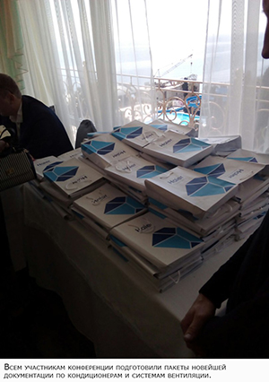
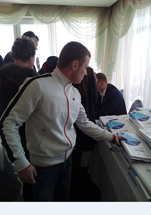

Региональная конференция HAIER по климатической технике.
24 марта 2017 года прошла региональная конференция HAIER по климатической технике для Крымских партнёров. Специалисты компании проводили обучающие мастер-классы, курсы повышения квалификации, презентацию новейшего оборудования и семинары. Конференция проходила в Ялте, в бизнес-центре отеля Palmira Palace. Сотрудники компании «Крымский Сервисный Центр» были приглашены на конференцию.

В течение дня гости могли ознакомиться с инновационными решениями в области шумоизоляции – был проведён семинар о технической реализации и результатах снижения шумности оборудования. Для участников провели презентацию новых заводов: завода по производству холодильного оборудования в Татарстане, оборудованного на базе КАМАЗа, строящегося R&D центра в городе Набережные Челны и первого «умного» завода в Китае – полностью автоматизированной экологичной системы. Здесь будет выпускаться промышленное оборудование кондиционирования и вентиляции, также представленное на презентации.

В выставочном зале гостей ознакомили с последними моделями кондиционеров и вентиляционного оборудования, а также представили модели, наиболее подходящие к нашим климатическим условиям. В преддверии нового сезона, каждый из участников мог записаться на очередные курсы повышения квалификации, задать интересующие вопросы и узнать мнение специалистов-разработчиков по различным вопросам. Кроме работников HAIER, на выставке присутствовали специалисты АИВК – Ассоциации инженеров по вентиляции и кондиционированию.
  